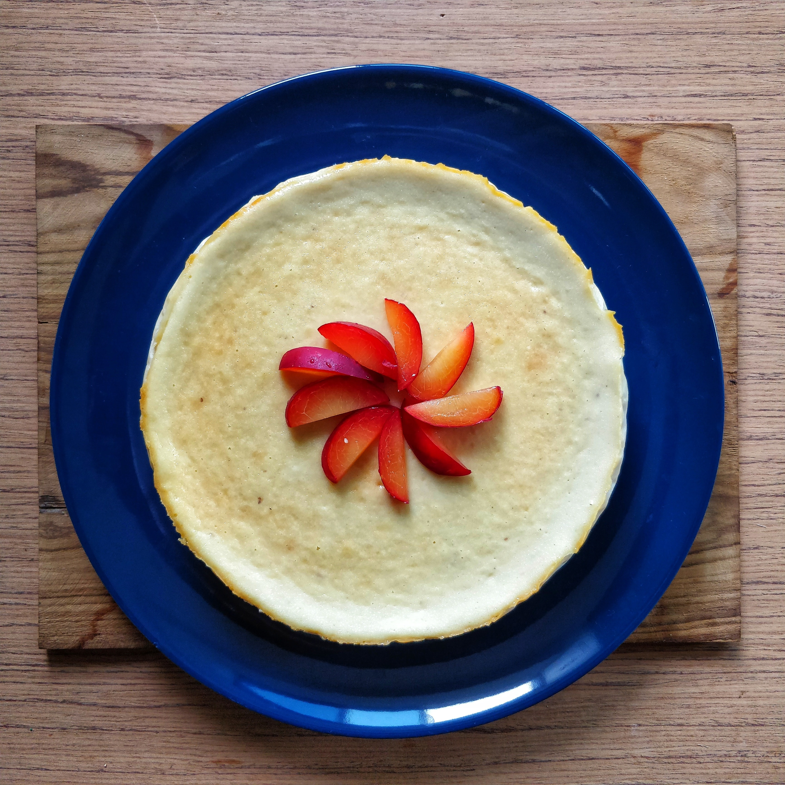

Description
Ingredients
1 1/2 cups (177g) King Arthur Unbleached All-Purpose Flour
1/4 teaspoon salt
1/4 teaspoon baking powder, optional; for added flakiness
4 tablespoons (57g) butter
1/4 cup (43g) vegetable shortening
1 teaspoon white or cider vinegar
3 to 5 tablespoons (43g to 71g) ice water
1 1/2 cups (340g) milk (anything from skim to whole, your choice)
1 cup (227g) cream (heavy, whipping, light, or half & half, your choice)
1/4 teaspoon salt
4 large eggs
2/3 cup (131g) sugar
1 tablespoon (14g) vanilla extract
1/4 teaspoon ground or freshly grated nutmeg
Steps
1. To make the crust: Whisk together all of the dry ingredients.
2. Add the shortening, mixing until the mixture is evenly crumbly. Add the butter, working it in until it's unevenly crumbly, with some larger chunks of butter remaining.
3. Sprinkle the vinegar and 3 tablespoons of the ice water over the dough while tossing with a fork. Add more water if the dough isn't coming together. Just as soon as the dough becomes cohesive (i.e., you can squeeze it into a ball easily), stop mixing; there should still be visible pieces of fat in the dough.
4. Flatten the dough into a disk and wrap it in plastic wrap or waxed paper. Refrigerate for 30 minutes or longer; this resting period allows the flour to absorb the water, making the dough easier to roll out.
5. Roll the chilled crust into a 13" circle, and lay it in a lightly greased 9" pie pan. Make an upright (rather than flat) crimp around the edge, as pictured above; this will help keep the filling from sloshing out as you move the pie from counter to oven. Place the pie crust in the refrigerator to chill while you preheat the oven to 375°F with a rack set in the middle.
6. To blind-bake (pre-bake) the pie crust, line the chilled crust with foil or parchment paper, and fill it with pie weights or dried beans. Bake the crust for 20 minutes. Remove it from the oven, and gently remove the foil or parchment with the weights or beans. Return the crust to the oven for 10 to 15 more minutes, until it's golden brown all over. If the edges of the crust start to become too brown, cover them with a pie shield or strips of aluminum foil. Remove the crust from the oven and cool completely while you make the filling.
7. Reduce the oven temperature to 300°F.
8. To make the filling: Start by combining the milk, cream, and salt in a medium-sized saucepan or microwave-safe bowl. Heat the mixture until small bubbles form around the edges, and steam starts to wisp from the surface; this is how you "scald" milk, if you've ever seen that technique mentioned.
9. In a separate bowl, whisk together the eggs and sugar. Pour 1/4 of the hot milk/cream over the egg mixture, stirring well. Pour the egg mixture into the remaining hot milk/cream, stirring well. Pour the custard through a sieve, to strain out any possible bits of cooked egg. Stir in the vanilla extract.
10. Pour the hot filling into the baked, cooled crust. Sprinkle the nutmeg evenly over the top. Cover the edges of the pie with a pie shield or strips of aluminum foil to prevent over-browning.
11. Place the pie onto your oven's middle rack and bake it for 35 to 40 minutes, or until the custard is set at the edges but still a bit wobbly in the center. The temperature of the pie at the center should be between 170°F and 180°F.
12. Remove the pie from the oven, and place it on a rack to cool. When it's completely cool, refrigerate until you're ready to serve.
13. Store any leftovers in the refrigerator for several days.
Looks delicious! Can't wait to try it out!
I'll try this out with different fruits!